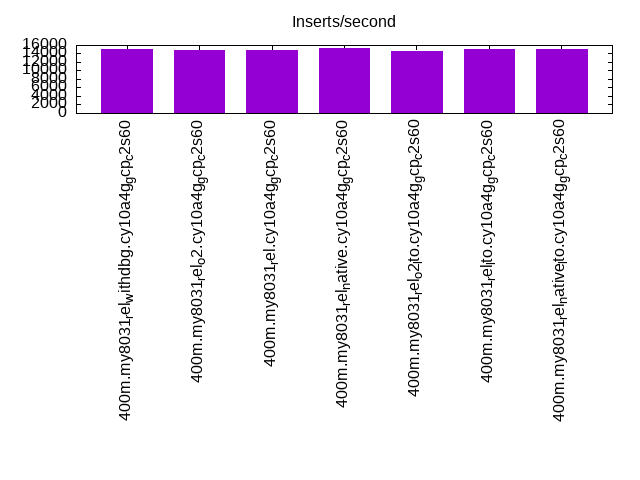

This is a report for the insert benchmark with 400M docs and 20 client(s). It is generated by scripts (bash, awk, sed) and Tufte might not be impressed. An overview of the insert benchmark is here and a short update is here. Below, by DBMS, I mean DBMS+version.config. An example is my8020.c10b40 where my means MySQL, 8020 is version 8.0.20 and c10b40 is the name for the configuration file.
This is a report for the insert benchmark with 400M docs and 20 client(s). It is generated by scripts (bash, awk, sed) and Tufte might not be impressed. An overview of the insert benchmark is here and a short update is here. Below, by DBMS, I mean DBMS+version.config. An example is my8020.c10b40 where my means MySQL, 8020 is version 8.0.20 and c10b40 is the name for the configuration file.The test server is c2-standard-60 from GCP with 30 cores, hyperthreads disabled, 240G RAM and 3T of NVMe (XFS with RAID0 over 8 devices). The benchmark was run with 20 clients and there were 1 or 2 connections per client (1 for queries, 1 for inserts). It uses 20 tables with a client per table. It loads 20M rows per table without secondary indexes, creates secondary indexes, loads another 20M rows per table then does 3 read+write tests for one hour each that do queries as fast as possible with 100, 500 and then 1000 writes/second/client concurrent with the queries. The database is cached by the OS but not by InnoDB. Clients and the DBMS share one server. The per-database configs are in the per-database subdirectories here.
The tested DBMS are:
The numbers are inserts/s for l.i0 and l.i1, indexed docs (or rows) /s for l.x and queries/s for q*.2. The values are the average rate over the entire test for inserts (IPS) and queries (QPS). The range of values for IPS and QPS is split into 3 parts: bottom 25%, middle 50%, top 25%. Values in the bottom 25% have a red background, values in the top 25% have a green background and values in the middle have no color. A gray background is used for values that can be ignored because the DBMS did not sustain the target insert rate. Red backgrounds are not used when the minimum value is within 80% of the max value.
| dbms | l.i0 | l.x | l.i1 | q100.1 | q500.1 | q1000.1 |
|---|---|---|---|---|---|---|
| 400m.my8031_rel_withdbg.cy10a4g_gcp_c2s60 | 992556 | 950356 | 14992 | 20377 | 1704 | 1382 |
| 400m.my8031_rel_o2.cy10a4g_gcp_c2s60 | 970874 | 943632 | 14938 | 20038 | 1710 | 1312 |
| 400m.my8031_rel.cy10a4g_gcp_c2s60 | 1000000 | 954893 | 14738 | 19476 | 1630 | 1275 |
| 400m.my8031_rel_native.cy10a4g_gcp_c2s60 | 1005025 | 948104 | 15206 | 20538 | 1701 | 1306 |
| 400m.my8031_rel_o2_lto.cy10a4g_gcp_c2s60 | 995025 | 943632 | 14705 | 19915 | 1647 | 1263 |
| 400m.my8031_rel_lto.cy10a4g_gcp_c2s60 | 985222 | 966425 | 15093 | 20454 | 1707 | 1319 |
| 400m.my8031_rel_native_lto.cy10a4g_gcp_c2s60 | 990099 | 957177 | 14979 | 20170 | 1674 | 1346 |
This table has relative throughput, throughput for the DBMS relative to the DBMS in the first line, using the absolute throughput from the previous table.
| dbms | l.i0 | l.x | l.i1 | q100.1 | q500.1 | q1000.1 |
|---|---|---|---|---|---|---|
| 400m.my8031_rel_withdbg.cy10a4g_gcp_c2s60 | 1.00 | 1.00 | 1.00 | 1.00 | 1.00 | 1.00 |
| 400m.my8031_rel_o2.cy10a4g_gcp_c2s60 | 0.98 | 0.99 | 1.00 | 0.98 | 1.00 | 0.95 |
| 400m.my8031_rel.cy10a4g_gcp_c2s60 | 1.01 | 1.00 | 0.98 | 0.96 | 0.96 | 0.92 |
| 400m.my8031_rel_native.cy10a4g_gcp_c2s60 | 1.01 | 1.00 | 1.01 | 1.01 | 1.00 | 0.95 |
| 400m.my8031_rel_o2_lto.cy10a4g_gcp_c2s60 | 1.00 | 0.99 | 0.98 | 0.98 | 0.97 | 0.91 |
| 400m.my8031_rel_lto.cy10a4g_gcp_c2s60 | 0.99 | 1.02 | 1.01 | 1.00 | 1.00 | 0.95 |
| 400m.my8031_rel_native_lto.cy10a4g_gcp_c2s60 | 1.00 | 1.01 | 1.00 | 0.99 | 0.98 | 0.97 |
This lists the average rate of inserts/s for the tests that do inserts concurrent with queries. For such tests the query rate is listed in the table above. The read+write tests are setup so that the insert rate should match the target rate every second. Cells that are not at least 95% of the target have a red background to indicate a failure to satisfy the target.
| dbms | q100.1 | q500.1 | q1000.1 |
|---|---|---|---|
| my8031_rel_withdbg.cy10a4g_gcp_c2s60 | 1977 | 8535 | 8515 |
| my8031_rel_o2.cy10a4g_gcp_c2s60 | 1977 | 8411 | 8602 |
| my8031_rel.cy10a4g_gcp_c2s60 | 1977 | 8276 | 8409 |
| my8031_rel_native.cy10a4g_gcp_c2s60 | 1977 | 8463 | 8610 |
| my8031_rel_o2_lto.cy10a4g_gcp_c2s60 | 1977 | 8396 | 8529 |
| my8031_rel_lto.cy10a4g_gcp_c2s60 | 1977 | 8439 | 8662 |
| my8031_rel_native_lto.cy10a4g_gcp_c2s60 | 1977 | 8431 | 8515 |
| target | 2000 | 10000 | 20000 |
l.i0: load without secondary indexes. Graphs for performance per 1-second interval are here.
Average throughput:
Insert response time histogram: each cell has the percentage of responses that take <= the time in the header and max is the max response time in seconds. For the max column values in the top 25% of the range have a red background and in the bottom 25% of the range have a green background. The red background is not used when the min value is within 80% of the max value.
| dbms | 256us | 1ms | 4ms | 16ms | 64ms | 256ms | 1s | 4s | 16s | gt | max |
|---|---|---|---|---|---|---|---|---|---|---|---|
| my8031_rel_withdbg.cy10a4g_gcp_c2s60 | 0.458 | 98.917 | 0.545 | 0.042 | 0.035 | 0.002 | 0.301 | ||||
| my8031_rel_o2.cy10a4g_gcp_c2s60 | 0.472 | 98.840 | 0.610 | 0.041 | 0.034 | 0.002 | 0.273 | ||||
| my8031_rel.cy10a4g_gcp_c2s60 | 0.645 | 98.723 | 0.552 | 0.044 | 0.033 | 0.003 | 0.288 | ||||
| my8031_rel_native.cy10a4g_gcp_c2s60 | 0.652 | 98.755 | 0.515 | 0.041 | 0.036 | 0.001 | 0.278 | ||||
| my8031_rel_o2_lto.cy10a4g_gcp_c2s60 | 0.555 | 98.832 | 0.532 | 0.044 | 0.035 | 0.002 | 0.282 | ||||
| my8031_rel_lto.cy10a4g_gcp_c2s60 | 0.639 | 98.738 | 0.541 | 0.047 | 0.034 | 0.003 | 0.288 | ||||
| my8031_rel_native_lto.cy10a4g_gcp_c2s60 | 0.611 | 98.770 | 0.535 | 0.046 | 0.036 | 0.001 | 0.285 |
Performance metrics for the DBMS listed above. Some are normalized by throughput, others are not. Legend for results is here.
ips qps rps rmbps wps wmbps rpq rkbpq wpi wkbpi csps cpups cspq cpupq dbgb1 dbgb2 rss maxop p50 p99 tag 992556 0 0 0.0 2530.7 270.9 0.000 0.000 0.003 0.279 222089 66.2 0.224 20 26.4 155.0 0.7 0.301 53741 38152 400m.my8031_rel_withdbg.cy10a4g_gcp_c2s60 970874 0 0 0.0 2486.1 263.6 0.000 0.000 0.003 0.278 226956 65.4 0.234 20 26.4 155.0 0.7 0.273 50844 37959 400m.my8031_rel_o2.cy10a4g_gcp_c2s60 1000000 0 0 0.0 2543.2 268.9 0.000 0.000 0.003 0.275 218851 66.0 0.219 20 26.4 155.0 0.7 0.288 53162 38657 400m.my8031_rel.cy10a4g_gcp_c2s60 1005025 0 0 0.0 2564.5 275.7 0.000 0.000 0.003 0.281 220926 66.1 0.220 20 26.4 155.0 0.7 0.278 55141 39271 400m.my8031_rel_native.cy10a4g_gcp_c2s60 995025 0 0 0.0 2543.0 271.9 0.000 0.000 0.003 0.280 221994 66.0 0.223 20 26.4 155.0 0.7 0.282 52641 37658 400m.my8031_rel_o2_lto.cy10a4g_gcp_c2s60 985222 0 0 0.0 2525.5 269.3 0.000 0.000 0.003 0.280 219555 65.7 0.223 20 26.4 155.0 0.7 0.288 53861 37559 400m.my8031_rel_lto.cy10a4g_gcp_c2s60 990099 0 0 0.0 2540.2 270.7 0.000 0.000 0.003 0.280 225109 66.2 0.227 20 26.4 155.0 0.7 0.285 54229 38058 400m.my8031_rel_native_lto.cy10a4g_gcp_c2s60
l.x: create secondary indexes.
Average throughput:
Performance metrics for the DBMS listed above. Some are normalized by throughput, others are not. Legend for results is here.
ips qps rps rmbps wps wmbps rpq rkbpq wpi wkbpi csps cpups cspq cpupq dbgb1 dbgb2 rss maxop p50 p99 tag 950356 0 4764 329.6 17910.6 909.8 0.005 0.355 0.019 0.980 141624 35.8 0.149 11 58.8 187.4 0.7 0.020 NA NA 400m.my8031_rel_withdbg.cy10a4g_gcp_c2s60 943632 0 4765 329.5 17805.0 907.3 0.005 0.358 0.019 0.985 140548 40.8 0.149 13 58.8 187.4 0.7 0.013 NA NA 400m.my8031_rel_o2.cy10a4g_gcp_c2s60 954893 0 4764 329.6 17832.2 909.9 0.005 0.353 0.019 0.976 139131 37.2 0.146 12 58.8 187.4 0.7 0.014 NA NA 400m.my8031_rel.cy10a4g_gcp_c2s60 948104 0 4764 329.5 17855.5 910.4 0.005 0.356 0.019 0.983 141239 38.4 0.149 12 58.8 187.4 0.7 0.011 NA NA 400m.my8031_rel_native.cy10a4g_gcp_c2s60 943632 0 4765 329.6 17754.8 909.2 0.005 0.358 0.019 0.987 142996 35.7 0.152 11 58.8 187.4 0.7 0.009 NA NA 400m.my8031_rel_o2_lto.cy10a4g_gcp_c2s60 966425 0 4823 333.5 18018.0 921.4 0.005 0.353 0.019 0.976 139103 35.3 0.144 11 58.8 187.4 0.7 0.016 NA NA 400m.my8031_rel_lto.cy10a4g_gcp_c2s60 957177 0 4822 333.7 18003.3 918.8 0.005 0.357 0.019 0.983 142013 35.7 0.148 11 58.8 187.4 0.7 0.025 NA NA 400m.my8031_rel_native_lto.cy10a4g_gcp_c2s60
l.i1: continue load after secondary indexes created. Graphs for performance per 1-second interval are here.
Average throughput:
Insert response time histogram: each cell has the percentage of responses that take <= the time in the header and max is the max response time in seconds. For the max column values in the top 25% of the range have a red background and in the bottom 25% of the range have a green background. The red background is not used when the min value is within 80% of the max value.
| dbms | 256us | 1ms | 4ms | 16ms | 64ms | 256ms | 1s | 4s | 16s | gt | max |
|---|---|---|---|---|---|---|---|---|---|---|---|
| my8031_rel_withdbg.cy10a4g_gcp_c2s60 | 0.551 | 10.437 | 55.250 | 31.016 | 2.746 | nonzero | 1.341 | ||||
| my8031_rel_o2.cy10a4g_gcp_c2s60 | 0.556 | 10.489 | 54.951 | 31.250 | 2.753 | nonzero | 1.166 | ||||
| my8031_rel.cy10a4g_gcp_c2s60 | 0.694 | 10.792 | 53.706 | 31.922 | 2.886 | nonzero | 1.416 | ||||
| my8031_rel_native.cy10a4g_gcp_c2s60 | 0.709 | 11.633 | 54.517 | 30.451 | 2.690 | nonzero | 1.218 | ||||
| my8031_rel_o2_lto.cy10a4g_gcp_c2s60 | 0.731 | 11.001 | 53.522 | 31.782 | 2.965 | nonzero | 1.270 | ||||
| my8031_rel_lto.cy10a4g_gcp_c2s60 | 0.696 | 10.464 | 54.933 | 31.289 | 2.617 | nonzero | 1.209 | ||||
| my8031_rel_native_lto.cy10a4g_gcp_c2s60 | 0.702 | 10.634 | 54.510 | 31.416 | 2.738 | nonzero | 1.233 |
Performance metrics for the DBMS listed above. Some are normalized by throughput, others are not. Legend for results is here.
ips qps rps rmbps wps wmbps rpq rkbpq wpi wkbpi csps cpups cspq cpupq dbgb1 dbgb2 rss maxop p50 p99 tag 14992 0 0 0.0 17069.3 399.2 0.000 0.001 1.139 27.265 271072 15.8 18.080 316 155.4 285.2 0.7 1.341 749 200 400m.my8031_rel_withdbg.cy10a4g_gcp_c2s60 14938 0 1 0.1 17023.1 397.8 0.000 0.005 1.140 27.271 273021 15.8 18.277 317 155.4 285.2 0.7 1.166 700 200 400m.my8031_rel_o2.cy10a4g_gcp_c2s60 14738 0 1 0.0 16584.5 392.3 0.000 0.001 1.125 27.258 273810 15.4 18.579 313 155.4 285.2 0.7 1.416 699 200 400m.my8031_rel.cy10a4g_gcp_c2s60 15206 0 1 0.1 17199.5 404.3 0.000 0.004 1.131 27.223 274855 15.6 18.075 308 155.3 285.2 0.7 1.218 749 200 400m.my8031_rel_native.cy10a4g_gcp_c2s60 14705 0 1 0.1 16839.6 392.7 0.000 0.004 1.145 27.349 272633 15.4 18.540 314 155.4 285.2 0.7 1.270 699 200 400m.my8031_rel_o2_lto.cy10a4g_gcp_c2s60 15093 0 2 0.1 17199.1 405.2 0.000 0.007 1.140 27.492 275486 15.7 18.253 312 155.4 285.2 0.7 1.209 749 200 400m.my8031_rel_lto.cy10a4g_gcp_c2s60 14979 0 1 0.1 17015.1 399.6 0.000 0.004 1.136 27.321 272764 15.5 18.210 310 155.4 285.2 0.7 1.233 700 200 400m.my8031_rel_native_lto.cy10a4g_gcp_c2s60
q100.1: range queries with 100 insert/s per client. Graphs for performance per 1-second interval are here.
Average throughput:
Query response time histogram: each cell has the percentage of responses that take <= the time in the header and max is the max response time in seconds. For max values in the top 25% of the range have a red background and in the bottom 25% of the range have a green background. The red background is not used when the min value is within 80% of the max value.
| dbms | 256us | 1ms | 4ms | 16ms | 64ms | 256ms | 1s | 4s | 16s | gt | max |
|---|---|---|---|---|---|---|---|---|---|---|---|
| my8031_rel_withdbg.cy10a4g_gcp_c2s60 | 10.269 | 73.052 | 12.000 | 4.454 | 0.217 | 0.008 | nonzero | nonzero | 1.282 | ||
| my8031_rel_o2.cy10a4g_gcp_c2s60 | 9.742 | 73.297 | 12.207 | 4.527 | 0.218 | 0.008 | nonzero | 0.708 | |||
| my8031_rel.cy10a4g_gcp_c2s60 | 10.070 | 72.616 | 12.180 | 4.866 | 0.258 | 0.010 | nonzero | 0.809 | |||
| my8031_rel_native.cy10a4g_gcp_c2s60 | 9.720 | 73.907 | 11.709 | 4.451 | 0.205 | 0.008 | nonzero | 0.659 | |||
| my8031_rel_o2_lto.cy10a4g_gcp_c2s60 | 10.183 | 72.916 | 11.989 | 4.660 | 0.242 | 0.010 | nonzero | 0.641 | |||
| my8031_rel_lto.cy10a4g_gcp_c2s60 | 10.780 | 72.642 | 11.835 | 4.514 | 0.220 | 0.009 | nonzero | 0.748 | |||
| my8031_rel_native_lto.cy10a4g_gcp_c2s60 | 10.361 | 72.915 | 11.893 | 4.589 | 0.232 | 0.009 | nonzero | 0.623 |
Insert response time histogram: each cell has the percentage of responses that take <= the time in the header and max is the max response time in seconds. For max values in the top 25% of the range have a red background and in the bottom 25% of the range have a green background. The red background is not used when the min value is within 80% of the max value.
| dbms | 256us | 1ms | 4ms | 16ms | 64ms | 256ms | 1s | 4s | 16s | gt | max |
|---|---|---|---|---|---|---|---|---|---|---|---|
| my8031_rel_withdbg.cy10a4g_gcp_c2s60 | 0.281 | 31.279 | 52.183 | 14.707 | 1.501 | 0.049 | 2.481 | ||||
| my8031_rel_o2.cy10a4g_gcp_c2s60 | 0.065 | 24.826 | 55.761 | 17.953 | 1.358 | 0.036 | 1.693 | ||||
| my8031_rel.cy10a4g_gcp_c2s60 | 0.182 | 26.175 | 54.529 | 17.394 | 1.688 | 0.032 | 2.223 | ||||
| my8031_rel_native.cy10a4g_gcp_c2s60 | 0.146 | 30.625 | 52.782 | 14.996 | 1.426 | 0.025 | 1.654 | ||||
| my8031_rel_o2_lto.cy10a4g_gcp_c2s60 | 0.107 | 28.728 | 52.792 | 16.650 | 1.686 | 0.037 | 1.562 | ||||
| my8031_rel_lto.cy10a4g_gcp_c2s60 | 0.224 | 27.593 | 54.632 | 15.950 | 1.561 | 0.040 | 1.743 | ||||
| my8031_rel_native_lto.cy10a4g_gcp_c2s60 | 0.171 | 30.090 | 52.681 | 15.549 | 1.469 | 0.040 | 1.853 |
Performance metrics for the DBMS listed above. Some are normalized by throughput, others are not. Legend for results is here.
ips qps rps rmbps wps wmbps rpq rkbpq wpi wkbpi csps cpups cspq cpupq dbgb1 dbgb2 rss maxop p50 p99 tag 1977 20377 68 1.3 11007.6 233.4 0.003 0.064 5.568 120.886 247768 32.1 12.159 473 157.9 287.7 0.7 1.282 1215 96 400m.my8031_rel_withdbg.cy10a4g_gcp_c2s60 1977 20038 80 1.5 10860.2 231.0 0.004 0.078 5.494 119.634 247008 32.3 12.327 484 157.9 287.7 0.7 0.708 1183 96 400m.my8031_rel_o2.cy10a4g_gcp_c2s60 1977 19476 90 1.7 10896.7 231.1 0.005 0.088 5.512 119.720 250013 31.0 12.837 478 157.9 287.7 0.7 0.809 1167 80 400m.my8031_rel.cy10a4g_gcp_c2s60 1977 20538 72 1.4 10855.2 230.5 0.004 0.069 5.491 119.399 245967 32.4 11.976 473 157.9 287.7 0.7 0.659 1213 80 400m.my8031_rel_native.cy10a4g_gcp_c2s60 1977 19915 67 1.3 10926.2 230.9 0.003 0.067 5.527 119.604 250761 31.6 12.592 476 157.9 287.7 0.7 0.641 1183 80 400m.my8031_rel_o2_lto.cy10a4g_gcp_c2s60 1977 20454 62 1.2 11063.7 234.2 0.003 0.062 5.596 121.319 251401 31.8 12.291 466 157.9 287.7 0.7 0.748 1215 96 400m.my8031_rel_lto.cy10a4g_gcp_c2s60 1977 20170 70 1.3 11019.7 233.2 0.003 0.068 5.574 120.772 249095 31.6 12.350 470 157.9 287.7 0.7 0.623 1215 96 400m.my8031_rel_native_lto.cy10a4g_gcp_c2s60
q500.1: range queries with 500 insert/s per client. Graphs for performance per 1-second interval are here.
Average throughput:
Query response time histogram: each cell has the percentage of responses that take <= the time in the header and max is the max response time in seconds. For max values in the top 25% of the range have a red background and in the bottom 25% of the range have a green background. The red background is not used when the min value is within 80% of the max value.
| dbms | 256us | 1ms | 4ms | 16ms | 64ms | 256ms | 1s | 4s | 16s | gt | max |
|---|---|---|---|---|---|---|---|---|---|---|---|
| my8031_rel_withdbg.cy10a4g_gcp_c2s60 | 4.917 | 15.372 | 11.947 | 45.103 | 21.308 | 1.326 | 0.027 | 0.967 | |||
| my8031_rel_o2.cy10a4g_gcp_c2s60 | 6.307 | 15.243 | 11.892 | 44.423 | 20.779 | 1.331 | 0.025 | 0.964 | |||
| my8031_rel.cy10a4g_gcp_c2s60 | 5.321 | 14.782 | 11.271 | 44.951 | 22.190 | 1.460 | 0.027 | 0.790 | |||
| my8031_rel_native.cy10a4g_gcp_c2s60 | 5.068 | 15.622 | 11.938 | 44.787 | 21.271 | 1.290 | 0.025 | 0.752 | |||
| my8031_rel_o2_lto.cy10a4g_gcp_c2s60 | 4.992 | 15.012 | 11.317 | 45.232 | 21.963 | 1.455 | 0.030 | 0.893 | |||
| my8031_rel_lto.cy10a4g_gcp_c2s60 | 5.903 | 14.954 | 11.847 | 44.949 | 21.038 | 1.284 | 0.025 | nonzero | 1.096 | ||
| my8031_rel_native_lto.cy10a4g_gcp_c2s60 | 5.197 | 15.080 | 11.610 | 45.167 | 21.549 | 1.370 | 0.026 | 0.917 |
Insert response time histogram: each cell has the percentage of responses that take <= the time in the header and max is the max response time in seconds. For max values in the top 25% of the range have a red background and in the bottom 25% of the range have a green background. The red background is not used when the min value is within 80% of the max value.
| dbms | 256us | 1ms | 4ms | 16ms | 64ms | 256ms | 1s | 4s | 16s | gt | max |
|---|---|---|---|---|---|---|---|---|---|---|---|
| my8031_rel_withdbg.cy10a4g_gcp_c2s60 | 0.074 | 1.931 | 36.473 | 53.803 | 7.692 | 0.027 | 2.029 | ||||
| my8031_rel_o2.cy10a4g_gcp_c2s60 | 0.112 | 1.993 | 36.635 | 53.433 | 7.801 | 0.027 | 1.446 | ||||
| my8031_rel.cy10a4g_gcp_c2s60 | 0.111 | 2.178 | 35.134 | 54.546 | 8.007 | 0.024 | 1.655 | ||||
| my8031_rel_native.cy10a4g_gcp_c2s60 | 0.111 | 2.007 | 36.251 | 53.998 | 7.614 | 0.018 | 1.759 | ||||
| my8031_rel_o2_lto.cy10a4g_gcp_c2s60 | 0.104 | 2.209 | 36.177 | 53.457 | 8.029 | 0.024 | 1.686 | ||||
| my8031_rel_lto.cy10a4g_gcp_c2s60 | 0.129 | 2.139 | 36.653 | 53.373 | 7.685 | 0.020 | 1.759 | ||||
| my8031_rel_native_lto.cy10a4g_gcp_c2s60 | 0.120 | 2.177 | 36.341 | 53.552 | 7.783 | 0.027 | 1.705 |
Performance metrics for the DBMS listed above. Some are normalized by throughput, others are not. Legend for results is here.
ips qps rps rmbps wps wmbps rpq rkbpq wpi wkbpi csps cpups cspq cpupq dbgb1 dbgb2 rss maxop p50 p99 tag 8535 1704 208 3.7 17623.6 344.2 0.122 2.227 2.065 41.301 359650 18.6 211.025 3274 165.7 295.5 0.7 0.967 64 48 400m.my8031_rel_withdbg.cy10a4g_gcp_c2s60 8411 1710 228 4.0 17536.0 342.9 0.134 2.382 2.085 41.747 359029 18.4 209.971 3228 165.7 295.5 0.7 0.964 64 48 400m.my8031_rel_o2.cy10a4g_gcp_c2s60 8276 1630 210 3.6 17094.4 335.3 0.129 2.250 2.066 41.484 363918 18.1 223.290 3332 165.7 295.5 0.7 0.790 64 48 400m.my8031_rel.cy10a4g_gcp_c2s60 8463 1701 231 4.1 17445.2 344.2 0.136 2.448 2.061 41.645 352169 18.5 207.000 3262 165.7 295.5 0.7 0.752 64 48 400m.my8031_rel_native.cy10a4g_gcp_c2s60 8396 1647 206 3.6 17375.3 337.8 0.125 2.268 2.070 41.205 365220 18.3 221.695 3333 165.6 295.5 0.7 0.893 64 48 400m.my8031_rel_o2_lto.cy10a4g_gcp_c2s60 8439 1707 190 3.4 17519.2 344.0 0.111 2.061 2.076 41.744 359983 18.3 210.923 3217 165.7 295.5 0.7 1.096 64 48 400m.my8031_rel_lto.cy10a4g_gcp_c2s60 8431 1674 200 3.5 17459.9 341.5 0.120 2.152 2.071 41.480 356998 18.3 213.248 3279 165.7 295.5 0.7 0.917 64 48 400m.my8031_rel_native_lto.cy10a4g_gcp_c2s60
q1000.1: range queries with 1000 insert/s per client. Graphs for performance per 1-second interval are here.
Average throughput:
Query response time histogram: each cell has the percentage of responses that take <= the time in the header and max is the max response time in seconds. For max values in the top 25% of the range have a red background and in the bottom 25% of the range have a green background. The red background is not used when the min value is within 80% of the max value.
| dbms | 256us | 1ms | 4ms | 16ms | 64ms | 256ms | 1s | 4s | 16s | gt | max |
|---|---|---|---|---|---|---|---|---|---|---|---|
| my8031_rel_withdbg.cy10a4g_gcp_c2s60 | 12.992 | 9.995 | 11.549 | 42.259 | 20.504 | 2.317 | 0.384 | nonzero | 1.318 | ||
| my8031_rel_o2.cy10a4g_gcp_c2s60 | 6.624 | 11.000 | 12.347 | 45.183 | 21.929 | 2.510 | 0.408 | nonzero | 1.401 | ||
| my8031_rel.cy10a4g_gcp_c2s60 | 7.359 | 10.505 | 11.348 | 44.898 | 22.849 | 2.606 | 0.435 | nonzero | 1.415 | ||
| my8031_rel_native.cy10a4g_gcp_c2s60 | 4.882 | 11.322 | 12.531 | 45.842 | 22.574 | 2.460 | 0.389 | nonzero | 1.141 | ||
| my8031_rel_o2_lto.cy10a4g_gcp_c2s60 | 6.423 | 10.392 | 11.554 | 45.982 | 22.571 | 2.616 | 0.463 | nonzero | 1.345 | ||
| my8031_rel_lto.cy10a4g_gcp_c2s60 | 8.428 | 10.230 | 11.912 | 44.826 | 21.746 | 2.443 | 0.414 | nonzero | 1.275 | ||
| my8031_rel_native_lto.cy10a4g_gcp_c2s60 | 11.998 | 9.998 | 11.417 | 42.799 | 20.990 | 2.391 | 0.407 | nonzero | 1.283 |
Insert response time histogram: each cell has the percentage of responses that take <= the time in the header and max is the max response time in seconds. For max values in the top 25% of the range have a red background and in the bottom 25% of the range have a green background. The red background is not used when the min value is within 80% of the max value.
| dbms | 256us | 1ms | 4ms | 16ms | 64ms | 256ms | 1s | 4s | 16s | gt | max |
|---|---|---|---|---|---|---|---|---|---|---|---|
| my8031_rel_withdbg.cy10a4g_gcp_c2s60 | 0.574 | 6.090 | 43.994 | 37.184 | 12.103 | 0.055 | 1.668 | ||||
| my8031_rel_o2.cy10a4g_gcp_c2s60 | 0.376 | 5.494 | 44.252 | 37.713 | 12.108 | 0.056 | 1.873 | ||||
| my8031_rel.cy10a4g_gcp_c2s60 | 0.465 | 5.576 | 43.132 | 38.182 | 12.574 | 0.071 | 2.281 | ||||
| my8031_rel_native.cy10a4g_gcp_c2s60 | 0.347 | 5.028 | 43.703 | 38.946 | 11.927 | 0.050 | 1.955 | ||||
| my8031_rel_o2_lto.cy10a4g_gcp_c2s60 | 0.487 | 7.024 | 43.831 | 35.830 | 12.763 | 0.064 | 1.798 | ||||
| my8031_rel_lto.cy10a4g_gcp_c2s60 | 0.549 | 6.723 | 43.697 | 36.970 | 12.005 | 0.057 | 1.935 | ||||
| my8031_rel_native_lto.cy10a4g_gcp_c2s60 | 0.665 | 6.904 | 43.452 | 36.790 | 12.130 | 0.060 | 2.128 |
Performance metrics for the DBMS listed above. Some are normalized by throughput, others are not. Legend for results is here.
ips qps rps rmbps wps wmbps rpq rkbpq wpi wkbpi csps cpups cspq cpupq dbgb1 dbgb2 rss maxop p50 p99 tag 8515 1382 293 6.3 15770.4 332.2 0.212 4.695 1.852 39.957 324076 17.2 234.413 3732 174.4 304.2 0.7 1.318 64 16 400m.my8031_rel_withdbg.cy10a4g_gcp_c2s60 8602 1312 303 6.5 15802.0 332.9 0.231 5.035 1.837 39.623 331264 17.6 252.469 4024 174.4 304.2 0.7 1.401 64 16 400m.my8031_rel_o2.cy10a4g_gcp_c2s60 8409 1275 288 6.3 15429.2 325.2 0.226 5.060 1.835 39.595 333225 17.1 261.374 4024 174.4 304.2 0.7 1.415 64 16 400m.my8031_rel.cy10a4g_gcp_c2s60 8610 1306 300 6.3 15701.3 333.6 0.230 4.945 1.824 39.677 328498 17.6 251.588 4044 174.4 304.2 0.7 1.141 64 16 400m.my8031_rel_native.cy10a4g_gcp_c2s60 8529 1263 292 6.4 15798.9 330.0 0.232 5.185 1.852 39.624 332287 16.9 263.177 4016 174.4 304.2 0.7 1.345 64 16 400m.my8031_rel_o2_lto.cy10a4g_gcp_c2s60 8662 1319 286 6.1 15882.7 334.9 0.217 4.769 1.834 39.594 329607 17.1 249.854 3889 174.4 304.2 0.7 1.275 64 16 400m.my8031_rel_lto.cy10a4g_gcp_c2s60 8515 1346 287 6.3 15703.3 330.9 0.213 4.808 1.844 39.791 323009 16.8 239.942 3744 174.4 304.2 0.7 1.283 64 16 400m.my8031_rel_native_lto.cy10a4g_gcp_c2s60
l.i0: load without secondary indexes
Performance metrics for all DBMS, not just the ones listed above. Some are normalized by throughput, others are not. Legend for results is here.
ips qps rps rmbps wps wmbps rpq rkbpq wpi wkbpi csps cpups cspq cpupq dbgb1 dbgb2 rss maxop p50 p99 tag 992556 0 0 0.0 2530.7 270.9 0.000 0.000 0.003 0.279 222089 66.2 0.224 20 26.4 155.0 0.7 0.301 53741 38152 400m.my8031_rel_withdbg.cy10a4g_gcp_c2s60 970874 0 0 0.0 2486.1 263.6 0.000 0.000 0.003 0.278 226956 65.4 0.234 20 26.4 155.0 0.7 0.273 50844 37959 400m.my8031_rel_o2.cy10a4g_gcp_c2s60 1000000 0 0 0.0 2543.2 268.9 0.000 0.000 0.003 0.275 218851 66.0 0.219 20 26.4 155.0 0.7 0.288 53162 38657 400m.my8031_rel.cy10a4g_gcp_c2s60 1005025 0 0 0.0 2564.5 275.7 0.000 0.000 0.003 0.281 220926 66.1 0.220 20 26.4 155.0 0.7 0.278 55141 39271 400m.my8031_rel_native.cy10a4g_gcp_c2s60 995025 0 0 0.0 2543.0 271.9 0.000 0.000 0.003 0.280 221994 66.0 0.223 20 26.4 155.0 0.7 0.282 52641 37658 400m.my8031_rel_o2_lto.cy10a4g_gcp_c2s60 985222 0 0 0.0 2525.5 269.3 0.000 0.000 0.003 0.280 219555 65.7 0.223 20 26.4 155.0 0.7 0.288 53861 37559 400m.my8031_rel_lto.cy10a4g_gcp_c2s60 990099 0 0 0.0 2540.2 270.7 0.000 0.000 0.003 0.280 225109 66.2 0.227 20 26.4 155.0 0.7 0.285 54229 38058 400m.my8031_rel_native_lto.cy10a4g_gcp_c2s60
l.x: create secondary indexes
Performance metrics for all DBMS, not just the ones listed above. Some are normalized by throughput, others are not. Legend for results is here.
ips qps rps rmbps wps wmbps rpq rkbpq wpi wkbpi csps cpups cspq cpupq dbgb1 dbgb2 rss maxop p50 p99 tag 950356 0 4764 329.6 17910.6 909.8 0.005 0.355 0.019 0.980 141624 35.8 0.149 11 58.8 187.4 0.7 0.020 NA NA 400m.my8031_rel_withdbg.cy10a4g_gcp_c2s60 943632 0 4765 329.5 17805.0 907.3 0.005 0.358 0.019 0.985 140548 40.8 0.149 13 58.8 187.4 0.7 0.013 NA NA 400m.my8031_rel_o2.cy10a4g_gcp_c2s60 954893 0 4764 329.6 17832.2 909.9 0.005 0.353 0.019 0.976 139131 37.2 0.146 12 58.8 187.4 0.7 0.014 NA NA 400m.my8031_rel.cy10a4g_gcp_c2s60 948104 0 4764 329.5 17855.5 910.4 0.005 0.356 0.019 0.983 141239 38.4 0.149 12 58.8 187.4 0.7 0.011 NA NA 400m.my8031_rel_native.cy10a4g_gcp_c2s60 943632 0 4765 329.6 17754.8 909.2 0.005 0.358 0.019 0.987 142996 35.7 0.152 11 58.8 187.4 0.7 0.009 NA NA 400m.my8031_rel_o2_lto.cy10a4g_gcp_c2s60 966425 0 4823 333.5 18018.0 921.4 0.005 0.353 0.019 0.976 139103 35.3 0.144 11 58.8 187.4 0.7 0.016 NA NA 400m.my8031_rel_lto.cy10a4g_gcp_c2s60 957177 0 4822 333.7 18003.3 918.8 0.005 0.357 0.019 0.983 142013 35.7 0.148 11 58.8 187.4 0.7 0.025 NA NA 400m.my8031_rel_native_lto.cy10a4g_gcp_c2s60
l.i1: continue load after secondary indexes created
Performance metrics for all DBMS, not just the ones listed above. Some are normalized by throughput, others are not. Legend for results is here.
ips qps rps rmbps wps wmbps rpq rkbpq wpi wkbpi csps cpups cspq cpupq dbgb1 dbgb2 rss maxop p50 p99 tag 14992 0 0 0.0 17069.3 399.2 0.000 0.001 1.139 27.265 271072 15.8 18.080 316 155.4 285.2 0.7 1.341 749 200 400m.my8031_rel_withdbg.cy10a4g_gcp_c2s60 14938 0 1 0.1 17023.1 397.8 0.000 0.005 1.140 27.271 273021 15.8 18.277 317 155.4 285.2 0.7 1.166 700 200 400m.my8031_rel_o2.cy10a4g_gcp_c2s60 14738 0 1 0.0 16584.5 392.3 0.000 0.001 1.125 27.258 273810 15.4 18.579 313 155.4 285.2 0.7 1.416 699 200 400m.my8031_rel.cy10a4g_gcp_c2s60 15206 0 1 0.1 17199.5 404.3 0.000 0.004 1.131 27.223 274855 15.6 18.075 308 155.3 285.2 0.7 1.218 749 200 400m.my8031_rel_native.cy10a4g_gcp_c2s60 14705 0 1 0.1 16839.6 392.7 0.000 0.004 1.145 27.349 272633 15.4 18.540 314 155.4 285.2 0.7 1.270 699 200 400m.my8031_rel_o2_lto.cy10a4g_gcp_c2s60 15093 0 2 0.1 17199.1 405.2 0.000 0.007 1.140 27.492 275486 15.7 18.253 312 155.4 285.2 0.7 1.209 749 200 400m.my8031_rel_lto.cy10a4g_gcp_c2s60 14979 0 1 0.1 17015.1 399.6 0.000 0.004 1.136 27.321 272764 15.5 18.210 310 155.4 285.2 0.7 1.233 700 200 400m.my8031_rel_native_lto.cy10a4g_gcp_c2s60
q100.1: range queries with 100 insert/s per client
Performance metrics for all DBMS, not just the ones listed above. Some are normalized by throughput, others are not. Legend for results is here.
ips qps rps rmbps wps wmbps rpq rkbpq wpi wkbpi csps cpups cspq cpupq dbgb1 dbgb2 rss maxop p50 p99 tag 1977 20377 68 1.3 11007.6 233.4 0.003 0.064 5.568 120.886 247768 32.1 12.159 473 157.9 287.7 0.7 1.282 1215 96 400m.my8031_rel_withdbg.cy10a4g_gcp_c2s60 1977 20038 80 1.5 10860.2 231.0 0.004 0.078 5.494 119.634 247008 32.3 12.327 484 157.9 287.7 0.7 0.708 1183 96 400m.my8031_rel_o2.cy10a4g_gcp_c2s60 1977 19476 90 1.7 10896.7 231.1 0.005 0.088 5.512 119.720 250013 31.0 12.837 478 157.9 287.7 0.7 0.809 1167 80 400m.my8031_rel.cy10a4g_gcp_c2s60 1977 20538 72 1.4 10855.2 230.5 0.004 0.069 5.491 119.399 245967 32.4 11.976 473 157.9 287.7 0.7 0.659 1213 80 400m.my8031_rel_native.cy10a4g_gcp_c2s60 1977 19915 67 1.3 10926.2 230.9 0.003 0.067 5.527 119.604 250761 31.6 12.592 476 157.9 287.7 0.7 0.641 1183 80 400m.my8031_rel_o2_lto.cy10a4g_gcp_c2s60 1977 20454 62 1.2 11063.7 234.2 0.003 0.062 5.596 121.319 251401 31.8 12.291 466 157.9 287.7 0.7 0.748 1215 96 400m.my8031_rel_lto.cy10a4g_gcp_c2s60 1977 20170 70 1.3 11019.7 233.2 0.003 0.068 5.574 120.772 249095 31.6 12.350 470 157.9 287.7 0.7 0.623 1215 96 400m.my8031_rel_native_lto.cy10a4g_gcp_c2s60
q500.1: range queries with 500 insert/s per client
Performance metrics for all DBMS, not just the ones listed above. Some are normalized by throughput, others are not. Legend for results is here.
ips qps rps rmbps wps wmbps rpq rkbpq wpi wkbpi csps cpups cspq cpupq dbgb1 dbgb2 rss maxop p50 p99 tag 8535 1704 208 3.7 17623.6 344.2 0.122 2.227 2.065 41.301 359650 18.6 211.025 3274 165.7 295.5 0.7 0.967 64 48 400m.my8031_rel_withdbg.cy10a4g_gcp_c2s60 8411 1710 228 4.0 17536.0 342.9 0.134 2.382 2.085 41.747 359029 18.4 209.971 3228 165.7 295.5 0.7 0.964 64 48 400m.my8031_rel_o2.cy10a4g_gcp_c2s60 8276 1630 210 3.6 17094.4 335.3 0.129 2.250 2.066 41.484 363918 18.1 223.290 3332 165.7 295.5 0.7 0.790 64 48 400m.my8031_rel.cy10a4g_gcp_c2s60 8463 1701 231 4.1 17445.2 344.2 0.136 2.448 2.061 41.645 352169 18.5 207.000 3262 165.7 295.5 0.7 0.752 64 48 400m.my8031_rel_native.cy10a4g_gcp_c2s60 8396 1647 206 3.6 17375.3 337.8 0.125 2.268 2.070 41.205 365220 18.3 221.695 3333 165.6 295.5 0.7 0.893 64 48 400m.my8031_rel_o2_lto.cy10a4g_gcp_c2s60 8439 1707 190 3.4 17519.2 344.0 0.111 2.061 2.076 41.744 359983 18.3 210.923 3217 165.7 295.5 0.7 1.096 64 48 400m.my8031_rel_lto.cy10a4g_gcp_c2s60 8431 1674 200 3.5 17459.9 341.5 0.120 2.152 2.071 41.480 356998 18.3 213.248 3279 165.7 295.5 0.7 0.917 64 48 400m.my8031_rel_native_lto.cy10a4g_gcp_c2s60
q1000.1: range queries with 1000 insert/s per client
Performance metrics for all DBMS, not just the ones listed above. Some are normalized by throughput, others are not. Legend for results is here.
ips qps rps rmbps wps wmbps rpq rkbpq wpi wkbpi csps cpups cspq cpupq dbgb1 dbgb2 rss maxop p50 p99 tag 8515 1382 293 6.3 15770.4 332.2 0.212 4.695 1.852 39.957 324076 17.2 234.413 3732 174.4 304.2 0.7 1.318 64 16 400m.my8031_rel_withdbg.cy10a4g_gcp_c2s60 8602 1312 303 6.5 15802.0 332.9 0.231 5.035 1.837 39.623 331264 17.6 252.469 4024 174.4 304.2 0.7 1.401 64 16 400m.my8031_rel_o2.cy10a4g_gcp_c2s60 8409 1275 288 6.3 15429.2 325.2 0.226 5.060 1.835 39.595 333225 17.1 261.374 4024 174.4 304.2 0.7 1.415 64 16 400m.my8031_rel.cy10a4g_gcp_c2s60 8610 1306 300 6.3 15701.3 333.6 0.230 4.945 1.824 39.677 328498 17.6 251.588 4044 174.4 304.2 0.7 1.141 64 16 400m.my8031_rel_native.cy10a4g_gcp_c2s60 8529 1263 292 6.4 15798.9 330.0 0.232 5.185 1.852 39.624 332287 16.9 263.177 4016 174.4 304.2 0.7 1.345 64 16 400m.my8031_rel_o2_lto.cy10a4g_gcp_c2s60 8662 1319 286 6.1 15882.7 334.9 0.217 4.769 1.834 39.594 329607 17.1 249.854 3889 174.4 304.2 0.7 1.275 64 16 400m.my8031_rel_lto.cy10a4g_gcp_c2s60 8515 1346 287 6.3 15703.3 330.9 0.213 4.808 1.844 39.791 323009 16.8 239.942 3744 174.4 304.2 0.7 1.283 64 16 400m.my8031_rel_native_lto.cy10a4g_gcp_c2s60
Insert response time histogram
256us 1ms 4ms 16ms 64ms 256ms 1s 4s 16s gt max tag 0.000 0.458 98.917 0.545 0.042 0.035 0.002 0.000 0.000 0.000 0.301 my8031_rel_withdbg.cy10a4g_gcp_c2s60 0.000 0.472 98.840 0.610 0.041 0.034 0.002 0.000 0.000 0.000 0.273 my8031_rel_o2.cy10a4g_gcp_c2s60 0.000 0.645 98.723 0.552 0.044 0.033 0.003 0.000 0.000 0.000 0.288 my8031_rel.cy10a4g_gcp_c2s60 0.000 0.652 98.755 0.515 0.041 0.036 0.001 0.000 0.000 0.000 0.278 my8031_rel_native.cy10a4g_gcp_c2s60 0.000 0.555 98.832 0.532 0.044 0.035 0.002 0.000 0.000 0.000 0.282 my8031_rel_o2_lto.cy10a4g_gcp_c2s60 0.000 0.639 98.738 0.541 0.047 0.034 0.003 0.000 0.000 0.000 0.288 my8031_rel_lto.cy10a4g_gcp_c2s60 0.000 0.611 98.770 0.535 0.046 0.036 0.001 0.000 0.000 0.000 0.285 my8031_rel_native_lto.cy10a4g_gcp_c2s60
TODO - determine whether there is data for create index response time
Insert response time histogram
256us 1ms 4ms 16ms 64ms 256ms 1s 4s 16s gt max tag 0.000 0.000 0.551 10.437 55.250 31.016 2.746 nonzero 0.000 0.000 1.341 my8031_rel_withdbg.cy10a4g_gcp_c2s60 0.000 0.000 0.556 10.489 54.951 31.250 2.753 nonzero 0.000 0.000 1.166 my8031_rel_o2.cy10a4g_gcp_c2s60 0.000 0.000 0.694 10.792 53.706 31.922 2.886 nonzero 0.000 0.000 1.416 my8031_rel.cy10a4g_gcp_c2s60 0.000 0.000 0.709 11.633 54.517 30.451 2.690 nonzero 0.000 0.000 1.218 my8031_rel_native.cy10a4g_gcp_c2s60 0.000 0.000 0.731 11.001 53.522 31.782 2.965 nonzero 0.000 0.000 1.270 my8031_rel_o2_lto.cy10a4g_gcp_c2s60 0.000 0.000 0.696 10.464 54.933 31.289 2.617 nonzero 0.000 0.000 1.209 my8031_rel_lto.cy10a4g_gcp_c2s60 0.000 0.000 0.702 10.634 54.510 31.416 2.738 nonzero 0.000 0.000 1.233 my8031_rel_native_lto.cy10a4g_gcp_c2s60
Query response time histogram
256us 1ms 4ms 16ms 64ms 256ms 1s 4s 16s gt max tag 10.269 73.052 12.000 4.454 0.217 0.008 nonzero nonzero 0.000 0.000 1.282 my8031_rel_withdbg.cy10a4g_gcp_c2s60 9.742 73.297 12.207 4.527 0.218 0.008 nonzero 0.000 0.000 0.000 0.708 my8031_rel_o2.cy10a4g_gcp_c2s60 10.070 72.616 12.180 4.866 0.258 0.010 nonzero 0.000 0.000 0.000 0.809 my8031_rel.cy10a4g_gcp_c2s60 9.720 73.907 11.709 4.451 0.205 0.008 nonzero 0.000 0.000 0.000 0.659 my8031_rel_native.cy10a4g_gcp_c2s60 10.183 72.916 11.989 4.660 0.242 0.010 nonzero 0.000 0.000 0.000 0.641 my8031_rel_o2_lto.cy10a4g_gcp_c2s60 10.780 72.642 11.835 4.514 0.220 0.009 nonzero 0.000 0.000 0.000 0.748 my8031_rel_lto.cy10a4g_gcp_c2s60 10.361 72.915 11.893 4.589 0.232 0.009 nonzero 0.000 0.000 0.000 0.623 my8031_rel_native_lto.cy10a4g_gcp_c2s60
Insert response time histogram
256us 1ms 4ms 16ms 64ms 256ms 1s 4s 16s gt max tag 0.000 0.000 0.281 31.279 52.183 14.707 1.501 0.049 0.000 0.000 2.481 my8031_rel_withdbg.cy10a4g_gcp_c2s60 0.000 0.000 0.065 24.826 55.761 17.953 1.358 0.036 0.000 0.000 1.693 my8031_rel_o2.cy10a4g_gcp_c2s60 0.000 0.000 0.182 26.175 54.529 17.394 1.688 0.032 0.000 0.000 2.223 my8031_rel.cy10a4g_gcp_c2s60 0.000 0.000 0.146 30.625 52.782 14.996 1.426 0.025 0.000 0.000 1.654 my8031_rel_native.cy10a4g_gcp_c2s60 0.000 0.000 0.107 28.728 52.792 16.650 1.686 0.037 0.000 0.000 1.562 my8031_rel_o2_lto.cy10a4g_gcp_c2s60 0.000 0.000 0.224 27.593 54.632 15.950 1.561 0.040 0.000 0.000 1.743 my8031_rel_lto.cy10a4g_gcp_c2s60 0.000 0.000 0.171 30.090 52.681 15.549 1.469 0.040 0.000 0.000 1.853 my8031_rel_native_lto.cy10a4g_gcp_c2s60
Query response time histogram
256us 1ms 4ms 16ms 64ms 256ms 1s 4s 16s gt max tag 4.917 15.372 11.947 45.103 21.308 1.326 0.027 0.000 0.000 0.000 0.967 my8031_rel_withdbg.cy10a4g_gcp_c2s60 6.307 15.243 11.892 44.423 20.779 1.331 0.025 0.000 0.000 0.000 0.964 my8031_rel_o2.cy10a4g_gcp_c2s60 5.321 14.782 11.271 44.951 22.190 1.460 0.027 0.000 0.000 0.000 0.790 my8031_rel.cy10a4g_gcp_c2s60 5.068 15.622 11.938 44.787 21.271 1.290 0.025 0.000 0.000 0.000 0.752 my8031_rel_native.cy10a4g_gcp_c2s60 4.992 15.012 11.317 45.232 21.963 1.455 0.030 0.000 0.000 0.000 0.893 my8031_rel_o2_lto.cy10a4g_gcp_c2s60 5.903 14.954 11.847 44.949 21.038 1.284 0.025 nonzero 0.000 0.000 1.096 my8031_rel_lto.cy10a4g_gcp_c2s60 5.197 15.080 11.610 45.167 21.549 1.370 0.026 0.000 0.000 0.000 0.917 my8031_rel_native_lto.cy10a4g_gcp_c2s60
Insert response time histogram
256us 1ms 4ms 16ms 64ms 256ms 1s 4s 16s gt max tag 0.000 0.000 0.074 1.931 36.473 53.803 7.692 0.027 0.000 0.000 2.029 my8031_rel_withdbg.cy10a4g_gcp_c2s60 0.000 0.000 0.112 1.993 36.635 53.433 7.801 0.027 0.000 0.000 1.446 my8031_rel_o2.cy10a4g_gcp_c2s60 0.000 0.000 0.111 2.178 35.134 54.546 8.007 0.024 0.000 0.000 1.655 my8031_rel.cy10a4g_gcp_c2s60 0.000 0.000 0.111 2.007 36.251 53.998 7.614 0.018 0.000 0.000 1.759 my8031_rel_native.cy10a4g_gcp_c2s60 0.000 0.000 0.104 2.209 36.177 53.457 8.029 0.024 0.000 0.000 1.686 my8031_rel_o2_lto.cy10a4g_gcp_c2s60 0.000 0.000 0.129 2.139 36.653 53.373 7.685 0.020 0.000 0.000 1.759 my8031_rel_lto.cy10a4g_gcp_c2s60 0.000 0.000 0.120 2.177 36.341 53.552 7.783 0.027 0.000 0.000 1.705 my8031_rel_native_lto.cy10a4g_gcp_c2s60
Query response time histogram
256us 1ms 4ms 16ms 64ms 256ms 1s 4s 16s gt max tag 12.992 9.995 11.549 42.259 20.504 2.317 0.384 nonzero 0.000 0.000 1.318 my8031_rel_withdbg.cy10a4g_gcp_c2s60 6.624 11.000 12.347 45.183 21.929 2.510 0.408 nonzero 0.000 0.000 1.401 my8031_rel_o2.cy10a4g_gcp_c2s60 7.359 10.505 11.348 44.898 22.849 2.606 0.435 nonzero 0.000 0.000 1.415 my8031_rel.cy10a4g_gcp_c2s60 4.882 11.322 12.531 45.842 22.574 2.460 0.389 nonzero 0.000 0.000 1.141 my8031_rel_native.cy10a4g_gcp_c2s60 6.423 10.392 11.554 45.982 22.571 2.616 0.463 nonzero 0.000 0.000 1.345 my8031_rel_o2_lto.cy10a4g_gcp_c2s60 8.428 10.230 11.912 44.826 21.746 2.443 0.414 nonzero 0.000 0.000 1.275 my8031_rel_lto.cy10a4g_gcp_c2s60 11.998 9.998 11.417 42.799 20.990 2.391 0.407 nonzero 0.000 0.000 1.283 my8031_rel_native_lto.cy10a4g_gcp_c2s60
Insert response time histogram
256us 1ms 4ms 16ms 64ms 256ms 1s 4s 16s gt max tag 0.000 0.000 0.574 6.090 43.994 37.184 12.103 0.055 0.000 0.000 1.668 my8031_rel_withdbg.cy10a4g_gcp_c2s60 0.000 0.000 0.376 5.494 44.252 37.713 12.108 0.056 0.000 0.000 1.873 my8031_rel_o2.cy10a4g_gcp_c2s60 0.000 0.000 0.465 5.576 43.132 38.182 12.574 0.071 0.000 0.000 2.281 my8031_rel.cy10a4g_gcp_c2s60 0.000 0.000 0.347 5.028 43.703 38.946 11.927 0.050 0.000 0.000 1.955 my8031_rel_native.cy10a4g_gcp_c2s60 0.000 0.000 0.487 7.024 43.831 35.830 12.763 0.064 0.000 0.000 1.798 my8031_rel_o2_lto.cy10a4g_gcp_c2s60 0.000 0.000 0.549 6.723 43.697 36.970 12.005 0.057 0.000 0.000 1.935 my8031_rel_lto.cy10a4g_gcp_c2s60 0.000 0.000 0.665 6.904 43.452 36.790 12.130 0.060 0.000 0.000 2.128 my8031_rel_native_lto.cy10a4g_gcp_c2s60